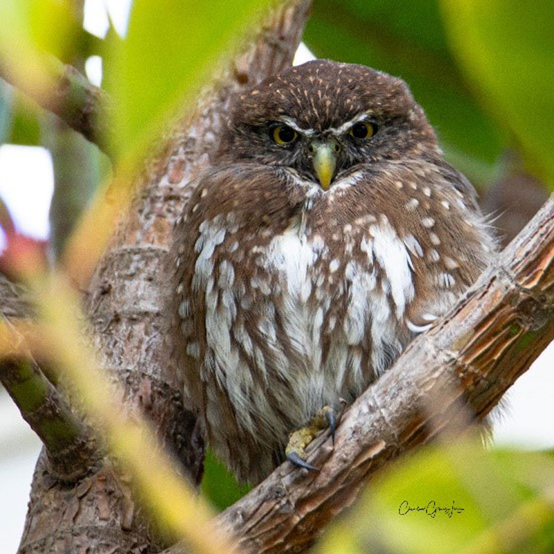
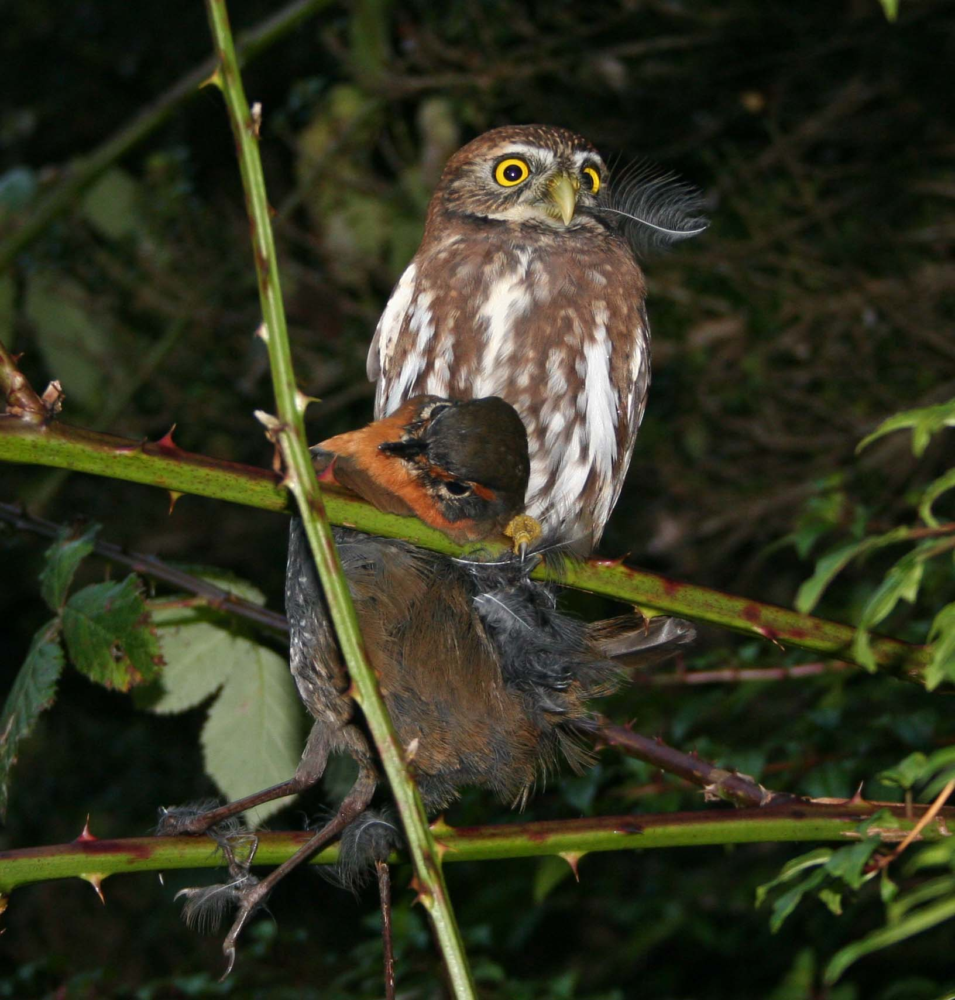
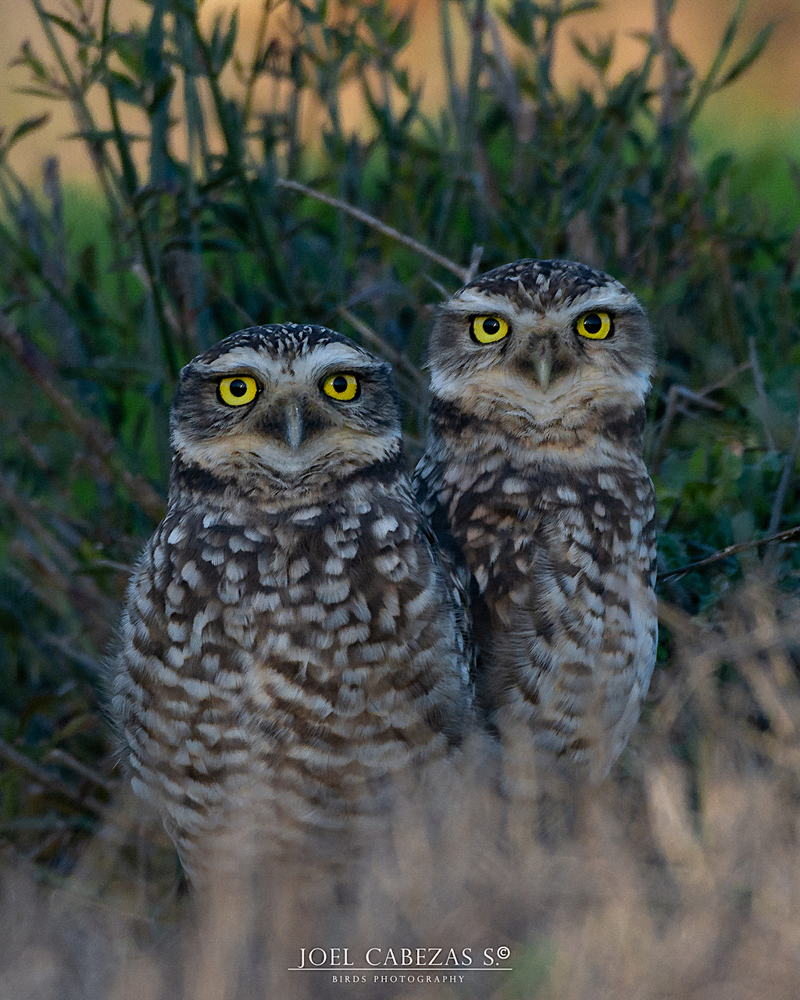

Información Detallada sobre el Chuncho
El Chuncho (Glaucidium nanum) es una de las especies de búhos más pequeñas del mundo, nativa de Sudamérica. A continuación, se presenta información detallada sobre su hábitat, hábitos alimenticios y reproductivos, así como su estado de conservación.
Hábitat y Ubicación Geográfica
El Chuncho habita principalmente en bosques templados y áreas abiertas de Chile y Argentina. Se encuentra desde el nivel del mar hasta los 2,000 metros de altitud.
Prefiere zonas con vegetación densa, como bosques de coigüe y lenga, donde puede encontrar refugio y alimento. Su distribución abarca desde la Región de Los Lagos en Chile hasta la Patagonia argentina.
Hábitos Alimenticios
El Chuncho es un depredador oportunista. Su dieta incluye pequeños mamíferos, aves, insectos y reptiles. Es conocido por cazar durante el día y la noche.
Utiliza su aguda visión y oído para detectar a sus presas, y su vuelo silencioso le permite acercarse sin ser detectado. Su técnica de caza incluye el acecho y el emboscamiento.
El Chuncho también se alimenta de insectos y pequeños invertebrados, lo que lo convierte en un ave versátil en su dieta. Su capacidad para adaptarse a diferentes fuentes de alimento es clave para su supervivencia.
En áreas urbanas, el Chuncho ha aprendido a cazar en jardines y parques, aprovechando la abundancia de aves y pequeños mamíferos que habitan en estas zonas.
Su dieta variada le permite sobrevivir en diferentes hábitats, desde bosques densos hasta áreas abiertas. Sin embargo, su dependencia de presas específicas puede hacer que sea vulnerable a cambios en el ecosistema.
El Chuncho es un ave importante en el control de poblaciones de insectos y pequeños mamíferos, lo que contribuye al equilibrio del ecosistema. Su papel como depredador es fundamental para mantener la salud de los bosques y áreas donde habita.
Hábitos Reproductivos
La temporada de reproducción del Chuncho ocurre en primavera. Anida en cavidades de árboles y pone entre 3 y 5 huevos, que son incubados por la hembra durante aproximadamente 30 días.
Los polluelos son alimentados por ambos padres y permanecen en el nido durante varias semanas antes de volar. La crianza de los polluelos es un esfuerzo conjunto entre ambos padres, quienes se turnan para alimentar y proteger a sus crías.
Los polluelos son alimentados con una dieta rica en proteínas, que incluye insectos y pequeños vertebrados. A medida que crecen, los padres les enseñan a cazar y a volar.
El Chuncho es un ave monógama, formando parejas que permanecen juntas durante toda la temporada de reproducción. Esta unión es crucial para el éxito reproductivo, ya que ambos padres participan activamente en la crianza de los polluelos.
La selección del sitio de anidación es fundamental para la supervivencia de los polluelos. El Chuncho elige lugares seguros y protegidos, lejos de depredadores y perturbaciones humanas.
La protección de los nidos es esencial para garantizar la supervivencia de los polluelos. Los padres son muy defensivos y atacan a cualquier intruso que se acerque a su nido.
El Chuncho tiene un comportamiento de defensa territorial durante la temporada de reproducción, emitiendo llamados característicos para advertir a otros machos de su presencia. Esta territorialidad es importante para asegurar el éxito reproductivo y la crianza de los polluelos.
La crianza de los polluelos es un proceso crítico, y la supervivencia de los jóvenes depende de la habilidad de los padres para proporcionar alimento y protección. La cooperación entre ambos padres es esencial para el éxito reproductivo.
Estado de Conservación
El Chuncho está clasificado como "Preocupación Menor" por la UICN, aunque su población ha disminuido en algunas áreas debido a la pérdida de hábitat y la caza. La conservación de su hábitat es crucial para su supervivencia.
La deforestación y la urbanización han reducido su hábitat natural, lo que ha llevado a una disminución en su población. La caza furtiva también representa una amenaza para esta especie.
La conservación de los bosques templados y la creación de áreas protegidas son fundamentales para garantizar la supervivencia del Chuncho. La educación y la sensibilización sobre la importancia de esta especie también son clave para su conservación.